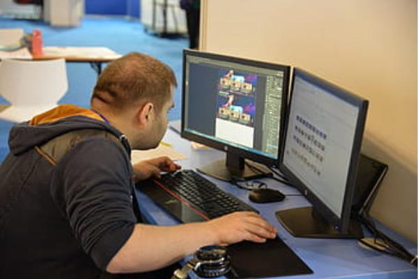

Ciclo Formativo de Grado Superior
Desarrollar, implantar y mantener aplicaciones web, con independencia del modelo empleado y utilizando tecnologías específicas, garantizando el acceso a los datos de forma segura y cumpliendo los criterios de accesibilidad, usabilidad y calidad exigidas en los estándares establecidos.
